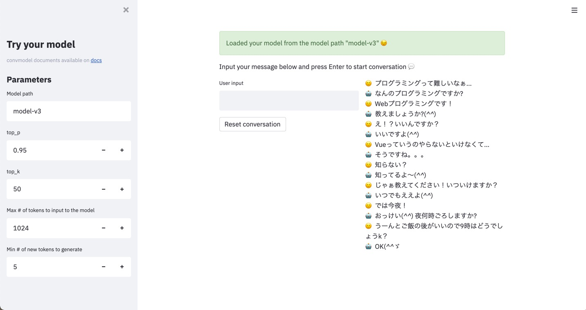

CLI (Experimental)
Currently convmodel CLI is an experimental feature.
To use convmodel CLI, install convmodel with cli option.
$ pip install git+https://github.com/colorfulscoop/convmodel[cli]
fit - Model training
This is a simple wrapper interface of ConversationModel.fit method.
You can simply run training by json config file via this interface.
All you need to do is preparing json config file. A template is prepared under example/fit_config.json.
$ cat example/fit_config.json
{
"pretrained_model_or_path": "(input your pretrained model path",
"output_path": "(input your output path)",
"train_file": "(input yout train file)",
"valid_file": "(input your valid file)",
"device": null,
"lr": 1e-4,
"warmup_steps": 10000,
"use_amp": false,
"epochs": 1,
"accumulation_steps": 1,
"show_progress_bar": true,
"log_steps": 100,
"shuffle_buffer_size": null,
"batch_size": 1,
"num_workers": 0,
"prefetch_factor": 2,
"seed": null,
"deterministic": false
}
At least you need to edit 4 parameters.
| Parameter | Description | Example value |
|---|---|---|
| pretrained_model_or_path | Pretrained model path to use | gpt2 |
| output_path | Path to save your trained model | model |
| train_file | Path for training data file. The format should be Json Lines. Each line needs to contain a list of string, which are one example of conversation | input/train.jsonl |
| valid_file | Path for validation data file. Format is the same as train_file. |
input/valid.jsonl |
One example of train/valid file is as follows.
$ head -n3 input/train.jsonl
["Hello", "Hi, how are you?", "Good, thank you, how about you?", "Good, thanks!"]
["I am hungry", "How about eating pizza?"]
["Tired...", "Let's have a break!", "Nice idea!"]
After preparing config json file, you can start training by fit CLI command.
$ python -m convmodel fit --config example/fit_config.json
After completing training, you can load the trained model from output_path for ConversationModel.
>>> from convmodel import ConversationModel
>>> model = ConversationModel.from_pretrained("model")
run_streamlit - Conversation test interface
convmodel CLI provides streamlit interface to test conversation of your model.
# Default server address and port will be used
$ python -m convmodel.cli run_streamlit
# You can set server port via --server.port option
$ python -m convmodel.cli run_streamlit --server.port 8080
# You can set server address and port via --server.address
$ python -m convmodel.cli run_streamlit --server.port 8080 --server.address 0.0.0.0
# You can check all options by --help
$ python -m convmodel.cli run_streamlit --help
As default, you can access UI via http://localhost:8501/ .
